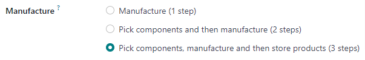
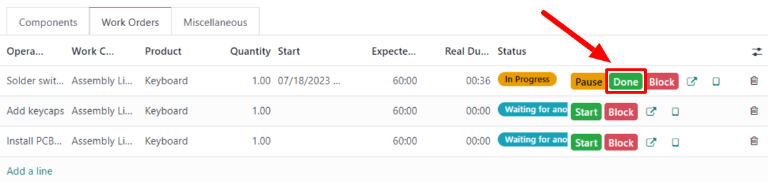

Three-step manufacturing¶
Odoo Manufacturing allows users to manufacture products using one, two, or three steps. When using three-step manufacturing, Odoo creates a pick components transfer, a manufacturing order (MO), and a store finished products transfer, and updates inventory counts based on the number of components removed, and finished products created.
Tip
The number of steps used in manufacturing is set at the warehouse level, allowing for each warehouse to use a different number of steps. To change the number of steps used for a specific warehouse, begin by navigating to , and then select a warehouse from the Warehouses screen.
On the Warehouse Configuration tab, find the Manufacture radio input field, and select one of the three options: Manufacture (1 step), Pick components and then manufacture (2 steps), or Pick components, manufacture and then store products (3 steps).
Important
Products must be properly configured before they can be manufactured in Odoo. For details on how to do so, see the documentation on how to configure a product for manufacturing.
Create manufacturing order¶
To manufacture a product in Odoo Manufacturing, begin by navigating to , and then click New to create a new MO.
On the new MO, select the product to be produced from the Product drop-down menu. The Bill of Material field auto-populates with the associated Bill of Materials (BoM).
If a product has more than one BoM configured for it, the specific BoM can be selected in the Bill of Material field, and the Product field auto-populates with the associated product.
After a BoM has been selected, the Components and Work Orders tabs auto-populate with the components and operations specified on the BoM. If additional components or operations are required for the MO being configured, add them to the Components and Work Orders tabs by clicking Add a line.
Finally, click Confirm to confirm the MO.
Process pick components transfer¶
After confirming a three-step MO, a Transfers smart button appears at the top of the page. Click it to be taken to the Transfers page for the MO. The page lists two transfers: WH/PC/XXXXX (the pick components transfer), and WH/SFP/XXXXX (the store finished products transfer).
Select WH/PC/XXXXX to open the pick components transfer for the MO. This transfer is used to track the movement of components from the locations where they are stored to the location where they are used to manufacture the product.
After transferring the components out of their storage location, click Validate at the top of the transfer, followed by Apply on the Immediate Transfer? pop-up window that appears. Doing so marks the transfer as Done, and updates inventory counts to reflect the quantity of components transferred.
Finally, return to the MO by clicking the WH/MO/XXXXX breadcrumb at the top of the page.

Process manufacturing order¶
An MO is processed by completing all of the work orders listed under its Work Orders tab. This can be done on the MO itself, or from the work order tablet view.
Basic workflow¶
To complete work orders from the MO itself, begin by navigating to , and then select a manufacturing order.
On the MO page, select the Work Orders tab. Once work begins on the first work order that needs to be completed, click the Start button for that work order. Odoo Manufacturing then starts a timer that keeps track of how long the work order takes to complete.

When the work order is completed, click the Done button for that work order. Repeat the same process for each work order listed on the Work Orders tab.
After completing all of the work orders, click Produce All at the top of the screen to mark the MO as Done, and register the manufactured product(s) into inventory.
Tablet view workflow¶
To complete the work orders for an MO using the tablet view, begin by navigating to , and then select a manufacturing order.
Next, click on the Work Orders tab, and then select the 📱 (tablet) button on the line of the first work order to be processed. This opens the tablet view.

After opening the tablet view, Odoo Manufacturing automatically starts a timer that keeps track of how long the work order takes to complete. After completing the work order, click the Mark as Done button in the top-right corner of the tablet view.
Clicking Mark as Done while there is at least one more work order left to complete opens a page that lists the next work order. Click on that work order to open it in the tablet view.
Once the final work order for the MO has been reached, a Mark as Done and Close MO button appears on the tablet view in addition to the Mark as Done button. Click Mark as Done and Close MO to mark the MO as Done, and register the manufactured product(s) into inventory.
It is also possible to complete the final work order while keeping the MO open, by clicking Mark as Done. In this case, the MO can be closed at a later time by clicking the Produce All button on the MO.
Process finished product transfer¶
After completing the MO, return to the order’s Transfers page by clicking the Transfers button at the top of the order. This time, select WH/SFP/XXXXX to open the store finished products transfer. This transfer is used to track the movement of finished products from the location where they were manufactured to the location where they are stored.
After transferring the finished products to their storage location, click Validate at the top of the transfer, followed by Apply on the Immediate Transfer? pop-up window that appears. Doing so marks the transfer as Done, and updates inventory counts to reflect the quantity of finished products transferred.